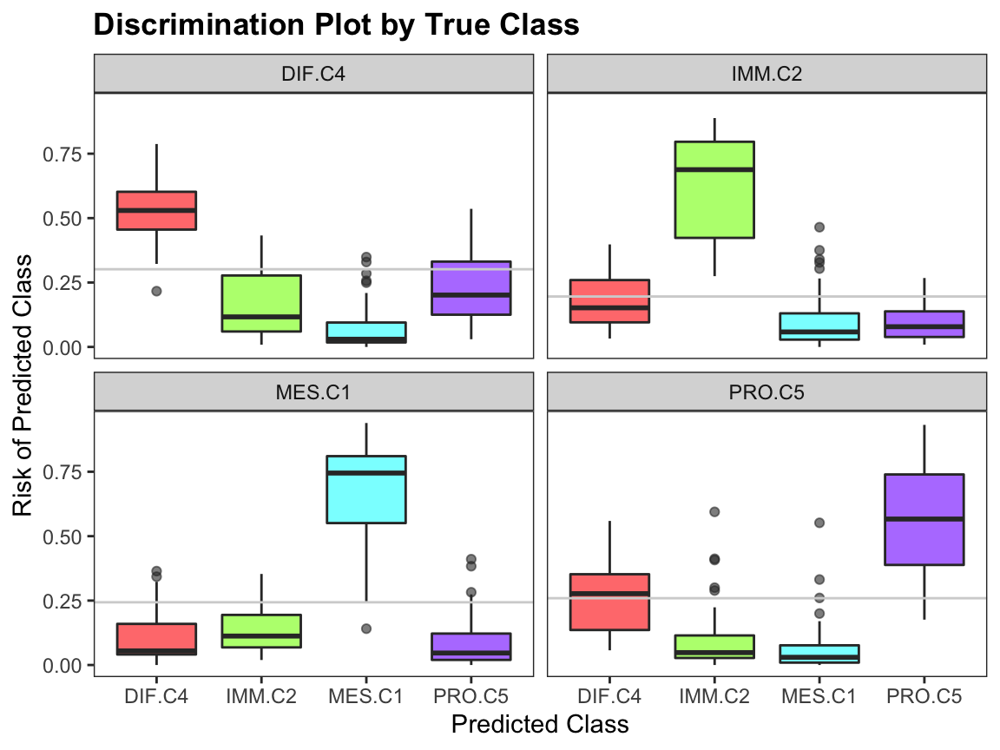
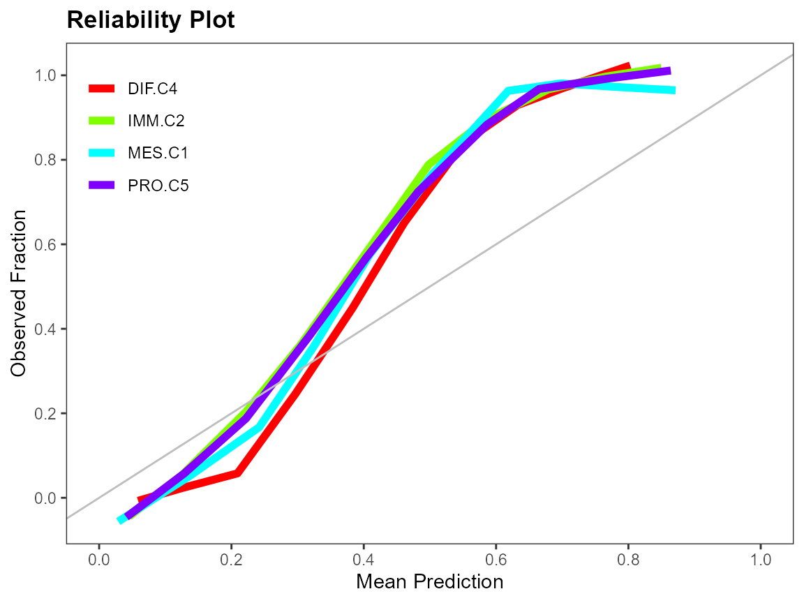

splendid
vignettes/ensemble_classification.Rmd
ensemble_classification.RmdSupervised learning is the branch of statistical learning where we construct a predictive model with the goal of regression or classification. The splendid package focuses on classification with an ensemble framework: many classification algorithms are used, and prediction is done across bootstrap replicates of the data. An ensemble classifier is built from the best performing algorithms according to evaluation measures. No single classifier always performs the best for every data set that exists, so there is increasing utility to come up with ensemble classifiers. The objective is to use this classifier to obtain highly accurate predictions in independent data sets for the purposes of diagnostic identification. In genomic studies for example, one might be interested in using the class labels of a cancer subtype in one cohort to predict the subtypes in an independent cohort.
splendid is currently only available on GitHub (the second line below will be uncommented once the repository becomes public).
The main function of splendid is splendid(), and the usage is intuitive:
data: your rectangular data in standard form (rows as samples/observations, columns as variables/features)class: the true/reference class labels with length equal to the number of samplesalgorithms: character vector of classification algorithmsn: number of bootstrap replicates to generate as training sets. Test sets are taken from the out-of-bag samples (OOB).seed_boot: constant for reproducibility in bootstrapping training sets for model generationconvert: whether to convert categorical predictors to dummy variablesrfe: whether to use Recursive Feature Elimination (RFE) for feature selection. Only implemented for certain algorithms.ova: whether to run one-vs-all versions for each algorithm (e.g. class 1 vs. not class 1, class 2 vs. not class 2, etc.)standardize: whether to standardize the training set before classification and the test set (using training set centerings & scalings) during predictionplus: whether to calculate the .632+ or .632 estimator for the log loss error ratethreshold: predicted probabilities below this value are classified as “unclassified” instead of imposing one of the labels from class
trees: number of trees/iterations to use in random forest/boosting models, respectivelytune: whether to tune hyperparameters in pertinent algorithmstop: how many of the top performing algorithms are chosen for the final ensemble?seed_rank: random seed used for reproducibility in rank aggregation of ensemble algorithmssequential: whether to run the sequential ensembleclass <- attr(hgsc, "class.true")
table(class)
#> class
#> DIF.C4 IMM.C2 MES.C1 PRO.C5
#> 135 107 109 138
sl_result <- splendid(data = hgsc, class = class, n = 2,
algorithms = c("slda", "knn", "svm"), rfe = FALSE)The resulting object is a list with the following elements:
models gives the model fits for each of the algorithms used. The fits are themselves nested based on the number of bootstrap replicates.preds has the same hierarchical structure as models, except the metadata consists of the predicted class labels.evals is a list of data frames showing evaluation metrics for each algorithm. Rows are metrics and columns are bootstrap replicates. More details on this element will be provided later.bests is a vector that shows the best-performing algorithm for each bootstrapped replicate of the data, chosen by rank aggregation.ensemble_algs tallies the algorithm frequencies in bests, returning the top (3, by default) algorithms chosen.ensemble is a list of model fits for each of the algorithms in ensemble_algs, fit on the full data.str(sl_result, max.level = 2)
#> List of 8
#> $ models :List of 3
#> ..$ slda:List of 2
#> ..$ knn :List of 2
#> ..$ svm :List of 2
#> $ preds :List of 3
#> ..$ slda:List of 2
#> ..$ knn :List of 2
#> ..$ svm :List of 2
#> $ evals :List of 3
#> ..$ slda:'data.frame': 24 obs. of 2 variables:
#> .. ..- attr(*, "err_632plus")= num 1.94
#> ..$ knn :'data.frame': 24 obs. of 2 variables:
#> .. ..- attr(*, "err_632plus")= num 2.33
#> ..$ svm :'data.frame': 24 obs. of 2 variables:
#> .. ..- attr(*, "err_632plus")= num 0.243
#> $ bests : Named chr [1:2] "svm" "svm"
#> ..- attr(*, "names")= chr [1:2] "1" "2"
#> $ ensemble_algs: chr "svm"
#> $ ensemble_mods:List of 1
#> ..$ :List of 29
#> .. ..- attr(*, "class")= chr "svm"
#> $ seq_mods : NULL
#> $ seq_preds : NULLThe first step in the splendid pipeline is classification. Given explanatory data and a reference response of classes, we wish to build a classifier that can accurately predict class representation in a separate validation data set. To avoid overfitting, we split the given data into a training set and test set. The training set is constructed by taking a random sample with replacement of all samples. The test set is comprised of all samples which are not included in the corresponding training set, also known as an OOB sample. This is a simple bootstrap resampling scheme, which we replicate a sufficient number of times to capture sampling variability.
There exist a vast number of classification algorithms. Those currently in splendid are:
"pam")"svm")"rf")"lda")"slda")1
"sdda")1
"mlr_glm")2
"mlr_lasso")2
"mlr_ridge")2
"mlr_nnet")"nnet")"nbayes")"adaboost")"adaboost_m1")"xgboost")"knn")These algorithms are implemented in classification().
Certain functions have hyperparameters that need to be tuned in order to select the best model before prediction. We use a grid search on a pre-specified range of the hyperparameters and choose the optimal values using caret::train().
The ranges for the tuning parameters are:
svm
sigma: 1 / ncol(data) * 2 ^ (0:4)
C: 1, 2, 4, 8, 16rf
mtry: 1, 4, 9, 16, 25adaboost_m1
mfinal: 1, 2, 3, 4, 5maxdepth: 1, 2, 3, 4, 5coeflearn: “Breiman”, “Freund”, “Zhu”We use e1071::tune() for neural network parameters. The ranges are:
nnet
size: 1, 2, 3, 4, 5decay: 0, 0.125, 0.25, 0.375, 0.5Some algorithms have certain properties that require data manipulations before classification.
slda and sdda: These shrinkage discriminant analysis algorithms estimate the regularization parameters analytically without having to solve using resampling methods.multinom_nnet and nnet: We increase the maximum number of allowable weights to a sufficiently large number to avoid ill-fitted models.knn: Since K-Nearest Neighbours is a non-parametric method, there is no model object upon which predictions are made, and predicted classes are directly found. To obtain prediction probabilities by class, we use a distance matrix between the training and test set samples.pam: a uniform prior is used in the training step.xgboost: the objective function is soft probability, and the evaluation metric is log loss.We use Recursive Feature Elimination (RFE)3 on lda, rf, svm, and adaboost_m1 to reduce the dimensionality before classification. In svm, we do this before tuning because of the computational complexity. However, we can embed this feature selection within the tuning step for the other three algorithms. Set rfe = TRUE in splendid to use feature selection.
One limitation of RFE is that an a priori set of feature subset sizes need to be specified, determining the search space for the algorithm. By default, we set the sizes parameter to be every 5 integers from 0 up to one-half of the smallest class size. Recall the class sizes:
We tell RFE to search for the best models with 5, 10, …, 50 features. Cross-validation with 2 folds is used in the algorithm.
There is a different prediction method for each classifier, since they are all imported from an external package. The prediction() function calls each method based on the class of the model output from classification(). prediction() also performs some manipulations so that the results all have the same data structure: unnamed factors, with labels given in the same order as the true class labels.
The method for "pam" is an exception: the output from prediction() not only has the predicted class labels, but also the cross-validated threshold value calculated from the training set to use in prediction on the test set, named delta.
str(sl_result$preds, max.level = 2, list.len = 2)
#> List of 3
#> $ slda:List of 2
#> ..$ : Factor w/ 4 levels "DIF.C4","IMM.C2",..: 3 1 3 3 4 2 4 2 4 2 ...
#> .. ..- attr(*, "prob")= num [1:189, 1:4] 0.0202 1 0 0 0 ...
#> .. .. ..- attr(*, "dimnames")=List of 2
#> .. ..- attr(*, "class.true")= Factor w/ 4 levels "DIF.C4","IMM.C2",..: 3 1 3 3 3 2 4 2 4 2 ...
#> .. ..- attr(*, "class.thres")= Factor w/ 4 levels "DIF.C4","IMM.C2",..: 3 1 3 3 4 2 4 2 4 2 ...
#> .. ..- attr(*, "class.prop")= num 1
#> ..$ : Factor w/ 4 levels "DIF.C4","IMM.C2",..: 3 4 4 4 1 1 1 1 2 1 ...
#> .. ..- attr(*, "prob")= num [1:170, 1:4] 0.000858 0.039292 0 0 0.999683 ...
#> .. .. ..- attr(*, "dimnames")=List of 2
#> .. ..- attr(*, "class.true")= Factor w/ 4 levels "DIF.C4","IMM.C2",..: 3 3 4 4 4 1 1 4 2 1 ...
#> .. ..- attr(*, "class.thres")= Factor w/ 4 levels "DIF.C4","IMM.C2",..: 3 4 4 4 1 1 1 1 2 1 ...
#> .. ..- attr(*, "class.prop")= num 1
#> $ knn :List of 2
#> ..$ : Factor w/ 4 levels "DIF.C4","IMM.C2",..: 4 1 3 3 3 2 4 2 4 2 ...
#> .. ..- attr(*, "prob")= num [1:189, 1:4] 0 1 0 0 0 0 0 0 0 0 ...
#> .. .. ..- attr(*, "dimnames")=List of 2
#> .. ..- attr(*, "class.true")= Factor w/ 4 levels "DIF.C4","IMM.C2",..: 3 1 3 3 3 2 4 2 4 2 ...
#> .. ..- attr(*, "class.thres")= Factor w/ 4 levels "DIF.C4","IMM.C2",..: 4 1 3 3 3 2 4 2 4 2 ...
#> .. ..- attr(*, "class.prop")= num 1
#> ..$ : Factor w/ 4 levels "DIF.C4","IMM.C2",..: 3 3 4 4 1 1 2 4 1 2 ...
#> .. ..- attr(*, "prob")= num [1:170, 1:4] 0.2 0.2 0 0 1 1 0.4 0 0.6 0.4 ...
#> .. .. ..- attr(*, "dimnames")=List of 2
#> .. ..- attr(*, "class.true")= Factor w/ 4 levels "DIF.C4","IMM.C2",..: 3 3 4 4 4 1 1 4 2 1 ...
#> .. ..- attr(*, "class.thres")= Factor w/ 4 levels "DIF.C4","IMM.C2",..: 3 3 4 4 1 1 2 4 1 2 ...
#> .. ..- attr(*, "class.prop")= num 1
#> [list output truncated]Note that each predicted class has an attribute that shows the class probabilities in a matrix. We ensure that the class probabilities for every sample sum to one by making a small adjustment to one of the classes depending on whether the probability was over or under one. These matrices are useful to compute evaluation measures and generate discriminating graphs that we detail below, and is stored in attr(*, "prob").
To obtain better performance under evaluation metrics, we may want to exclude samples which have a maximum class probability below a threshold. For example, we may only compare the true test labels with the corresponding OOB samples where the winning class has a probability at least 50%. Samples below this threshold are labelled as "unclassified". If the threshold results in all samples being unclassified, then we use the unfiltered, original predicted labels for evaluation. This object is stored in attr(*, "class.thres").
The final attribute of a prediction object is stored attr(*, "class.prop"), showing the proportion of classified cases. This value is inversely proportional to the threshold setting.
Evaluation measures are important because they tell us the prediction performance of a classifier. The table below shows all the measures for svm, for two bootstrap replicates. The logloss and auc measures make use of the prediction probabilities, whereas the rest are computed from the multiclass confusion matrix of reference and predicted class labels.
| 1 | 2 | |
|---|---|---|
| logloss | 0.3388993 | 0.2972621 |
| auc | 0.9808265 | 0.9872663 |
| accuracy | 0.8677249 | 0.8705882 |
| macro_ppv | 0.8669629 | 0.8684233 |
| macro_sensitivity | 0.8736474 | 0.8810989 |
| macro_f1 | 0.8689601 | 0.8726367 |
| mcc | 0.8235136 | 0.8277881 |
| micro_mcc | 0.8236332 | 0.8274510 |
| ppv.DIF.C4 | 0.8545455 | 0.8863636 |
| ppv.IMM.C2 | 0.8095238 | 0.8378378 |
| ppv.MES.C1 | 0.9148936 | 0.8536585 |
| ppv.PRO.C5 | 0.8888889 | 0.8958333 |
| sensitivity.DIF.C4 | 0.8245614 | 0.7959184 |
| sensitivity.IMM.C2 | 0.9189189 | 0.9393939 |
| sensitivity.MES.C1 | 0.9347826 | 0.9459459 |
| sensitivity.PRO.C5 | 0.8163265 | 0.8431373 |
| f1.DIF.C4 | 0.8392857 | 0.8387097 |
| f1.IMM.C2 | 0.8607595 | 0.8857143 |
| f1.MES.C1 | 0.9247312 | 0.8974359 |
| f1.PRO.C5 | 0.8510638 | 0.8686869 |
| mcc.DIF.C4 | 0.7718957 | 0.7803576 |
| mcc.IMM.C2 | 0.8268016 | 0.8584279 |
| mcc.MES.C1 | 0.9002651 | 0.8689289 |
| mcc.PRO.C5 | 0.8031745 | 0.8155599 |
logloss: Multiclass log loss should be minimizedauc: Area Under the Curve compares trade-off between sensitivity and specificityaccuracy: number of correctly classified samples out of all samplesppv: also known as precisionsensitivity: also known as recallf1: balanced metric between precision and recallmcc: Matthew’s correlation coefficientNote that in the multiclass case, we have variants for some of the measures listed above, depending on how we are looking at the data. A macro-averaged metric calculates said metric on each of the one-vs-all confusion matrices and then takes the mean. A micro-averaged metric is calculated on the element-wise sum of all one-vs-all confusion matrices.
Hence, there are macro_ppv, macro_sensitivity, and macro_f1 macro-averaged metrics, and micro_mcc as the “only” micro-averaged metric. It turns out that accuracy is mathematically equivalent to micro-averaged PPV, sensitivity, and F1-score, so we don’t redundantly add those to the list. Furthermore, calculating mcc in a macro-averaged way is not recommended, so we use it on the full confusion matrix.
Class-specific measures fill in the rest of the matrix, labelled with the naming scheme metric.class.
The .632 estimator are implemented for the multiclass log loss function. This error estimate aims to make a compromise between an overbiased prediction like the leave-one-out bootstrap error with an underbiased prediction like the training (or apparent) error. If we set plus = TRUE in splendid() (default), one can calculate the .632+ estimator, an improvement over the .632 estimator that takes into account the amount of overfitting.5 The value is stored as an attribute in the evaluation object:
To assess the performance of a classifier, we can look at a discriminating plot and reliability plot.
data(hgsc)
class <- factor(attr(hgsc, "class.true"))
set.seed(1)
training.id <- sample(seq_along(class), replace = TRUE)
test.id <- which(!seq_along(class) %in% training.id)
mod <- classification(hgsc[training.id, ], class[training.id], "adaboost")
pred <- prediction(mod, hgsc, test.id, class = class)
evals <- evaluation(class[test.id], pred, plot = TRUE)
For each bootstrap replicate training set, we want to find the top performing classifier. We use Rank Aggregation with the Genetic Algorithm to choose the top algorithm by comparing across evaluation metrics4. In the case of log loss, we need to first invert its value since it its objective function is minimization. Class-specific measures are not included in the rank aggregation because they are interdependent. For example, a sample with a true class of “A” should not be treated differently depending on whether it was misclassified into “B” or “C”.
After obtaining the list of top classifiers for each bootstrap replicate, we sort them by decreasing frequency and keep the top 3 to use in the ensemble. The ensemble_mods output of splendid is a list of models fit on the full data for the top classifiers.